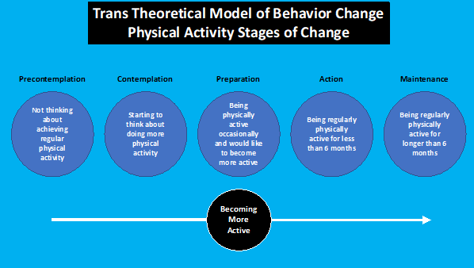

This CareFit app is designed to support you to carry out practical, safe, and fun exercises at home. It is designed to help you know what types of things you can do, when you can do it and how much is enough.
The format of this educational section is to take you through a logical step by step process and allows you to focus on your personal needs and physical activity plans. It complements the activities we have developed both in text and video.
We strongly suggest that you use the first seven days to spend 5 to 10 minutes each day to learn about physical activity and make a personalised plan. This ensures that you will develop plans that are safe, effective and are personalised- this gives you the best chance of forming longer term habits.
While we recommend that you complete the educational sections in full, if you wish to, you can skip to: